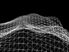
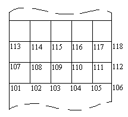
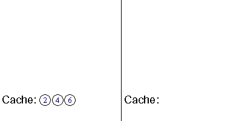
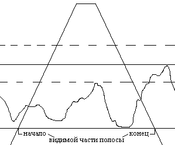
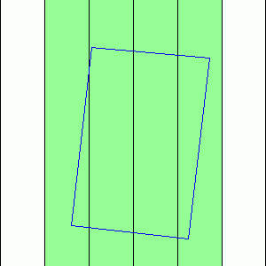
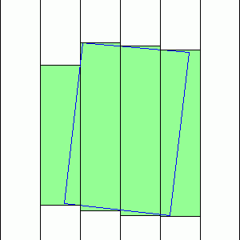

КРАТКОЕ ОПИСАНИЕ:
|  | В этой статье рассматривается множество различных вопросов реализации эффективного рендеринга геометрии, а также приводится немало техник и оптимизаций, которые помогут Вам сделать рендеринг ещё быстрее и эффективнее. В качестве бонуса, во второй части статьи приводится эффективный HSR-алгоритм для ландшафта на основе карты высот. |
В этой статье я попытаюсь осветить такой банальный , пожалуй , вопрос как вывод геометрии. Однако несмотря на его "простоту", на форуме до сих пор частенько возникают вопросы, типа, а что лучше, VBO или CVA/VAR, как лучше выводить геометрию - стрипами или triangle lists с оптимизацией под кэш, какие индексы ushort или uint работают быстрее, можно ли использовать целочисленные типы данных для вершин/нормалей/текс.координат, а также масса подобных вопросов. На все эти вопросы, а также некоторые другие я и постараюсь ответить в рамках данной статьи.
Ну на первую пару вопросов ответ я дам сразу, безо всяких объяснений и доказательств. Думаю, это нужно принимать как аксиому. Насчёт первого - конечно же VBO. Причём лучше хранить данные только в режиме GL_STATIC_DRAW (почему - см. чуть ниже). Насчёт второго - лучше triangle strips, т.к. вырожденные тр-ки не дают пенальти по скорости до превышения показателя в 2 индекса на треугольник, зато можно сэкономить на bandwidth - одно дело передавать три, скажем 32-битных, индекса на треугольник или только один индекс (хотя и triangle lists могут пригодиться, напр. для вывода растительности, т.е. в таких случаях, когда геометрия плохо представима непрерывными полосками тр-ков, однако практика показывает, что уже полоски в 8 квадов (16 тр-ков) с парой вставленных вырожденных треугольников между КАЖДОЙ такой полоской не только не проигрывают, а даже превосходят triangle lists по производительности). Остальные вопросы рассматриваются ниже.
Также скажу пару слов о заголовке статьи. И хотя в нём OpenGL не упоминается, всё здесь будет рассматриваться применительно к этому GAPI. Конечно, советы в данной статье пригодны не только для OpenGL, но я выбрал этот GAPI, т.к. он проще для понимания примеров, применительно к нему чаще возникают подобные вопросы (особенно первый, т.к. всяких расширений для вывода примитивов там хватает), ну и просто потому, что D3D я не знаю :-) .
Теперь вернусь к вопросу о VBO. Почему только оно и почему только статичная геометрия. Начну издалека.
1. Март 2003 года (поправьте если ошибся) - презентация "Batch, Batch, Batch".
Там можно найти немало интересных цифр. В частности утверждение
"производительность центральных процессоров за 18 месяцев увеличивается
в ~2.2 раза, а графических - в ~3.3 за это же время".
2. Ещё раньше. Лето 1999 года - презентация "Efficient use of H/W TnL",
Richard Huddy. Цитата: "производительность geFORCE256 T&L engine
сопоставима с Athlon 1.5GHz". Это только по обработке вершин и НЕ беря
во внимание тот факт, что в случае с Атлоном всё упрётся в пропускную
способность памяти (ведь GPU надо только читать данные, а CPU ещё и
записывать результат в память после обработки), речь чисто о
трансформации/освещении вершин.
Это всё прошлое, но это даёт понять, что о таких вещах говорить начали уже давно. А что сейчас? Производительность вершинного процессора Radeon 9800 сопоставима с Athlon 15000+, а эта видеокарта уже давно не Hi-End. При существующих темпах роста производительности графических процессоров становится понятно, что... обработка вершин на CPU абсолютно не приемлема в современных 3D-приложениях реального времени. Другими словами - времена 3-го Quake давно прошли.
А что такое динамический VBO буфер, обновляющийся каждый кадр?
1. Обработка вершин на процессоре (в принципе необязательно).
2.
Передача геометрии по AGP/PCI Ex. шине. ПСП AGP 8x - 2Гб/с, PCI Ex. - 4
Гб/с. ПСП видеопамяти Radеon 9800 - 18,5 Гб/с. ПСП RADEON X1950 XTX -
64 Гб/с.
Да, бывают исключения, да, бывают особые случаи. Но перспектива именно такова - только статичная (не изменяемая CPU) геометрия, обработка геометрии - только вершинные шейдеры/рендер в текстуру в пикс. шейдере с последующим чтением значений текстуры из верш-х шейдеров. А значит геометрия должна храниться исключительно в видео-памяти и (очень) редко обновляться по AGP/PCI Ex-шине для задач динамической подгрузки (стриминга), но не на каждом кадре.
И ещё кое что. Часто возникают случаи, когда надо вывести какую-либо геометрию со сложным верш. шейдером (персонаж со скинингом напр.) в несколько проходов. Что делать? Ну, лучшим вариантом будет конечно рендер в буфер вершин (ARB_pixel_buffer_object/EXT_pixel_buffer_object), но это поддерживается, к сожалению, только видеокартами NVIDIA, ещё неплохо рендерить в текстуру рассчитанные в пикс. шейдере координаты один раз, а потом читать уже просчитанные данные из текстуры в верш. шейдере на каждом проходе. Но если железо и этого не держит (или держит, но "плохо" - производительность низкая), тогда лучше просто всё так и оставить на GPU. Нужно 2,3,5 проходов - неважно, всё равно считаем (пересчитываем) на каждом проходе в верш. шейдере всё что нужно. Кажется, что лучше посчитать вершины на CPU один раз и загружать просчитанные данные в динамический VBO каждый кадр, чем несколько раз делать одну и ту же работу в верш. шейдере, но это не так... теперь это уже не так. Предположим CPU у нас Athlon 3000+ и вся сцена рендерится в 5 проходов с тяжёлым верш. шейдером, и всё упирается как раз в вершинный процессор. Переносим расчёты на CPU. Что получается - производительность вершинного процессора GPU (пусть будет R9800) в 5 раз больше CPU (пиковой), и проходов тоже 5, т.е. на CPU ложится в 5 раз меньшая нагрузка, чем на GPU, верно? Но и скорость его работы меньше в 5 раз. Получается, что теперь всё то время которое GPU считал вершины для 5 проходов, CPU такое же точно время тратит на однократный расчёт вершин. Т.е. в лучшем случае, что можно получить от такой "оптимизации" в данной ситуации - небольшое падение фпс. А теперь поближе к реальности. Производительность CPU бралась пиковая, т.е. если тупо умножать четвёрки float-ов через SSE в регистрах, без обращений к памяти. В действительности, даже половину этой производительности достичь просто невозможно из-за специфики задач 3D-графики. Кто-нибудь хоть раз пробовал написать эффективное скалярное произведение на SSE? Вот-вот, а на GPU - это одна инструкция. Дальше. Вот у нас только просчёт вершин занял 100% времени CPU, а что, больше CPU ничем не занят? А физика, AI, HSR-методы, батчи - всё то, что в современных играх отнимает >90% времени процессора. Это считать уже некому получается. Так что "небольшим падением фпс" тут не отделаешься. Здесь я, конечно не имею в виду такие задачи, которые на CPU решаются легче (тот же скининг например, может быть очень специфичен и трудно переносим на GPU из-за очень неравномерного кол-ва костей, влияющих на различные вершины) - тут речь только о задачах, которые требуют просто большого кол-ва математических вычислений и решаются сходными способами на CPU и GPU. И конечно же, не надо понимать мои рассуждения так, мол GPU можно нагружать сколько угодно, лишь бы хоть немного снизить нагрузку на CPU. Всегда надо руководствоваться здравым смыслом. И не надо считать для каждой вершины в верш. шейдере произведение матриц, если они константы в пределах шейдера - засунуть это произведение в uniform и один раз посчитать на CPU будет лучше даже если в верш. процессор производительность не упирается.
Ну ладно, произвольная программа закончилась, перехожу собс-но к основной части статьи. Многие наверное слышали/использовали glBegin/glEnd. Если ваша цель - самый эффективный рендеринг, то забудьте про них! Про dysplay-списки тоже забудьте! Я не говорю про пост-процессинг напр. с одним квадом на весь экран или кнопочки интерфейса - делайте как нравится. Всё изложенное ниже (и выше) относится только к критичному по времени рендерингу, CPU-bounded, vertex processor bounded или bandwidth limited (скажу сразу, если кто не в курсе, современные 3D-приложения как правило CPU или fillrate bounded, так что сначала убедитесь, что ваше приложение не-fillrate bounded, т.к. иначе нижеизложенные оптимизации вам попросту ненужны).
Итак, первое что нам нужно - это как-то скормить видюхе треугольники,
чтобы она проглотила их как можно быстрее. С учётом сказанного выше,
что должно быть:
1. Вывод как можно большего числа треугольников за батч (здесь я на этом
останавливаться не буду - всё это в картинках наглядно разъясняется в
вышеупомянутой "Batch, Batch, Batch").
2. VBO, GL_STATIC_DRAW (можно GL_DYNAMIC_DRAW, если геометрия меняется нечасто).
3. Triangle strips.
4. Pre-TnL оптимизация.
5. Post-TnL оптимизация.
Поскольку скоро я перейду к практике, дам пару разъяснений для новичков. Если кто ещё не знает:
Батч - вызов glDrawElements/glDrawArrays (DrawIndexedPrimitive в D3D), иными словами единица вывода геометрии (более подробно это понятие рассматривается в вот уже который раз упоминаемой здесь "Batch, Batch, Batch", хотя многие до сих пор спорят, считать ли изменение стейтов за батч, сколько таких изменений может быть в одном батче, вызов glDrawElements с предварительным изменением стейта - это один батч или два и т.д. и т.п., в общем считайте, что батч - некое абстрактное понятие (я бы сказал даже философское :-) ), обозначающее некоторую совокупность неких функций, прямо или косвенно связанных с отрисовкой некоторой геометрии :-), короче, главное запомнить одно - чем их (батчей) меньше - тем лучше);
VBO - Vertex Buffer Object - буфер (индексов, вершин), обычно в видеопамяти для самого быстрого доступа к геометрии для графического процессора, реализуется через одноимённое расширение, входит в стандарт OpenGL 1.5;
Triangle strips - собственно геометрия, выводимая через GL_TRIANGLE_STRIP, разъяснение - в спеке;
Pre-TnL оптимизация - оптимизация под Pre-TnL кэш, который хранит нетрансформированные вершины. Ну и соответственно Post-TnL кэш хранит трансформированные вершины. Трансформация - понятие слегка устаревшее, теперь её результатом являются не только положение вершины в оконных координатах и цвет с учётом освещения, но и вообще любой результат выполнения вершинного шейдера (все varying переменные в частности). Соответственно в Pre-TnL кэше хранятся атрибуты вершин (положение, текстурные координаты, возможно нормали и т.д.), а в Post-TnL - результат обработки этих атрибутов в вершинном шейдере.
Итак начну с конца, т.е. с подготовки данных (индексов и вершин) для буферов VBO с учётом Pre-TnL и Post-TnL оптимизаций. Здесь речь пойдёт только о рендере регулярной сетки (для произвольной геометрии надо её ещё правильно разбить на стрипы, здесь это не рассматривается - есть немало свободных библиотек на эту тему и инфы на этом сайте, здесь например). Итак, приступим.
С Pre-TnL в принципе всё понятно - вершины должны быть упорядочены таким образом, чтобы проходя по всем индексам вершинный процессор запрашивал их СТРОГО в порядке их следования в памяти. Нестрашно, если одна вершина будет дублироваться несколько раз - памяти это займёт всё-равно немного. Поэтому Pre-TnL должна идти после Post-TnL оптимизации, т.к. именно последняя и определяет порядок следования индексов.
Итак самое интересное, Post-TnL оптимизация. Начну с того, а зачем вообще нужен Post-TnL-кэш и почему без него нельзя обойтись, т.е. с очевидных всем, наверное, вещей. Что делает этот кэш понятно - избавляет вершинный процессор от повторного расчёта параметров (положение, свет) вершин при неоднократном ссылании на одну вершину. Почему так вообще происходит? Представьте регулярную сетку MxN квадов. Очевидно, она содержит (M+1)x(N+1) вершин. По идее, наиболее рациональным способом рендера такой сетки будет предварительный расчёт параметров (положение, цвет) всех её вершин, а затем уже вывод треугольников, использующих лишь индексы, ссылающиеся на конкретные, уже рассчитанные параметры. В такой ситуации никакой Post-TnL кэш не нужен, т.к. вершины всегда считаются один раз каждая. Современные же ускорители работают "по-другому" - вершины просчитываются налету из значений исходных атрибутов вершин, которые-то и хранятся в памяти, т.е. доступа к уже обработанным данным нет (и быть не может, т.к. результат обработки вершин вершинным процессором никуда не записывается... кроме как в Post-TnL кэш). Но вообще, даже в такой ситуации, но при условии, что все вершины уникальны, т.е. есть некая куча тр-ков, никак не связанных вершинами между собой, никакой Post-TnL кэш опять же не нужен. Это всё очевидные вещи, но понимать их, конечно, нужно. А теперь вернёмся к нашей регулярной сетке. Если вспомнить все способы представления индексов для геометрии (tri lists, стрипы, tri fans), то, за исключением частных случаев (напр. сетка 2x2 легко представляется одним TRIANGLE_FAN без всяких ссылок-индексов, разве только последняя вершина будет дублировать первую), становится понятно, что в любом случае нельзя составить такой список индексов вершин (некое представление для рендеринга геометрии), в котором не было бы дублирующихся вершин, т.е. дубликаты будут, а значит чтобы вершинному процессору не выполнять лишнюю работу по трансформации вершин дублирующихся индексов и нужен кэш, который и будет следить за тем, чтобы на вершину, трансформированную ранее, не тратилось лишнее время. Очевидно, что в таком общем списке индексов дублирующиеся индексы должны быть расположены как можно ближе друг к другу - ведь кэш не может быть бесконечным и вмещать в себя всю выводимую геометрию ему просто невозможно. Остаётся дело за малым - найти оптимальное представление такого списка индексов, чтобы его понимала видеокарта. Вообще наиболее универсальным является tringle list, в котором каждая тройка индексов однозначно определяет тр-к. Однако, как я говорил в начале статьи, стрипы треугольников не уступают спискам даже при большом проценте вырожденных тр-ков, и даже превосходят их по некоторым показателям, включая производительность и бОльшую компактность. Итак, выбрали стрипы, что дальше? Давно уже было признано, что регулярную сетку лучше выводить короткими полосками с длиной, соответствующей размеру Post-TnL кэша (я не буду говорить, "длиной ровно с половину кэша" или "длиной чуть менее размера кэша" - это зависит от архитектуры этого самого кэша и от используемой для построения стрипа техники). Т.е. берётся регулярная сетка, делится на полосы шириной в кэш (условно), каждая такая полоса выводится узкими полосочками, плотно прилегающими друг к другу. Не в даваясь в детали большого числа вариантов реализаций этой "идеи", нужно знать как минимум одну вещь (для эффективного рендеринга) - как вывести такое множество полосочек за минимум батчей (возможно даже один). На помощь приходит такая вещь, как склеивание стрипов. Я, надеюсь, все давно уже знаю что это такое, но на всякий случай повторю. Правило построения каждого тр-ка в стрипе (начиная с 3-го индекса стрипа) звучит так: если текущий индекс вершины нечётный по счёту, то тр-к составляется из тройки индексов (предпредыдущий, предыдущий, текущий индекс), если же текущий индекс чётный, то из тройки (предпредыдущий, текущий, предыдущий индекс). Таким образом, если у нас есть две полоски стрипов и их нужно склеить, нужно между ними вставить две вершины: первая - это последняя вершина первого стрипа, а вторая - это первая вершина второго стрипа. В результате такого склеивания образуется 4 вырожденных треугольника (т.е. таких треугольника, хотя бы две вершины которых совпадают - очевидно, что такой треугольник не закрашивается). Рассмотрим пример:
Пусть A,B,C,D - первый стрип, а E,F,G,H - второй. Стрип-результат их склеивания - A,B,C,D, D,E, E,F,G,H. Вырожденные тр-ки:(C,D,D), (D,E,D), (D,E,E), (E,F,E).
На этом очевидные вещи заканчиваются, и я перехожу собственно к принципу построения списка индексов, оптимизированного под Post-TnL кэш.
В данной статье я рассмотрю самую эффективную (из известных мне :-) ) оптимизацию под кэш, которую я обозвал DECU Tech - Doubling Effectiveness of Cache Usage Technique, здесь речь идёт о Post-TnL Cache, разумеется. В чём её суть. Будем считать, что Post-TnL кэш работает строго по принципу FIFO, т.е. очереди. Рассмотрим такую ситуацию:

Индексы для регулярной сетки начинаются в левом нижнем углу и идут вдоль вертикальной полосы. Пусть Post-TnL кэш имеет размер в 8 вершин. Геометрия выводится стрипом (...107,101,108,102,109,103,110,104...). Предположим, графический процессор дошёл до вершины 108, и вершины 100-107 каким-то образом уже находятся в Post-TnL кэше и расположены в нём строго в порядке возрастания (кэш - FIFO, новые вершины добавляются в конец кэша-очереди, т.е. после 107 вершины, а старые удаляются - в первую очередь выкинется из кэша вершина 100). Рисуем тр-к (107,101,108). Первые две вершины (107 и 101) взялись из кэша. 108-й вершины в кэше нет - происходит операция добавления новой вершины в кэш - 108-я вершина добавляется в конец очереди, а 100-ая удаляется из начала. Дальше рисуется тр-к (101,102,108). Все вершины находятся в кэше, следовательно, никаких операций с кэшем не производится. Рисуем тр-к (108,102,109). Первые две вершины (108 и 102) взялись из кэша, а 109-ая добавляется в конец кэша, и при этом (!) 101-ая вершина из кэша удаляется (как можно заметить, 101-ая вершина нам дальше и не понадобится). Если мысленно продолжить идти дальше, станет видна интересная картина - из кэша всегда в нужный момент удаляется только та вершина, которая использовалась в предыдущем треугольнике и больше не понадобится. Что даёт такой подход? Очевидно, эффективность использования кэша возрастает практически вдвое, т.к. кэшу не нужно хранить множество вершин в середине, к которым обращений больше не будет - контроллер кэша ведь не знает, что вершина в середине очереди-кэша уже использована повторно не будет, а вершина в начале (кандидат на удаление) - может скоро понадобиться. Не понятно о чём речь? Попробую пояснить на наглядном примере.

Слева - индексы в порядке по DECU Tech, справа - довольно распространённый порядок индексов, когда нечетная по счету полоска рендерится в одну сторону (слева направо напр.), а четная - в другую (справа налево). Как видно, в первом случае размер такого кэша, при котором не придётся пересчитывать дважды ни одну вершину, равен 5, а во втором - 9, т.е. при одинаковой длине стрипа в первом случае требуется почти вдвое меньший объём Post-TnL кэша. (На самом деле, в этом примере есть подвох... и даже не один :-), но основную мысль пример отражает верно). Ну и самое главное "know how" техники - как собс-но сделать так, чтобы вершины располагались в кэше строго в порядке возрастания на момент начала вывода стрипа - ведь на этом DECU Tech и основана. Как нетрудно заметить, если просто начать выводить первую полоску, то в кэше вершины первой и второй строк будут идти вперемешку - сначала вершина второй строки, потом первой, потом снова второй и т.д. Чтобы этого не происходило нужно, чтобы в кэше уже были вершины первой строки, тогда второй раз они уже не будут добавляться в кэш, и после них пойдут сразу вершины второй строки. Делается это очень просто - добавлением в начало стрипа одной полоски вырожденных тр-ков, состоящих из вершин только первой строки, т.е. нужна некая предварительная загрузка кэша невидимой геометрией. Стрип предзагрузки кэша выглядит примерно так: (1,1,2,2,3,3,4,4...). Такой стрип как раз и сформирует нужное нам содержание кэша - вершины в порядке возрастания. Замечу, что такой стрип в начале - обязателен, т.к. является основой техники и его отсутствие приводило на практике к падению производительности более чем на 40%, что означает фактически полное неиспользование кэша - вершины записываются в кэш вперемешку и уже ко второму ряду квадов повторно используемые вершины выбрасываются из кэша, как следствие - сплошная череда кэш промахов, существенно снижающая производительность.
Однако, при своей эффективности, эта техника имеет немало недостатков: жёсткая привязанность к размеру кэша конкретной архитектуры (если хотя бы одна вершина не помещается в кэше, это порождает череду кэш промахов, значит надо всегда "переделывать" индексы для архитектуры, на которой запускается приложение, либо всегда использовать структуру индексов для архитектуры с наименьшим размером кэша), сложность адаптации алгоритма для нерегулярных сеток (я не буду останавливаться на этом, однако и так очевидно, что существующие средства генерации стрипов такие как NVTriStrip, Tristripper не пригодны для генерации стрипов на основе произвольного меша с такой оптимизацией под кэш).
Идём дальше, немного о bandwidth limited случаях. Лучше положения вершин, нормали, текс. координаты и др. атрибуты хранить в 16-битных целых (GL_SHORT) - это не даёт perfomance penalty начиная с Radeon 9200 и GF4Ti, зато существенно экономит память (при этом такие числа обладают гораздо большей точностью, чем half float) и снижает время загрузки геометрии (как с жёсткого диска в оперативную память, так и в буферы в видеопамяти). Пара слов о glDrawRangeElements. Единственное назначение этой функции в современных драйверах - для архитектур, аппаратно не поддерживающих 32-битные индексы (всякие GF2/GF4MX), проверить по аргументам функции, попадают ли индексы в границу 64k (т.е. не превышают предела 16-битного целого), и если да, то используется GL_UNSIGNED_SHORT тип для индексов (если изначально он задавался как GL_UNSIGNED_INT). Но вообще лучше не использовать эту функцию, а только glDrawElements и просто явно задавать GL_UNSIGNED_SHORT тип для индексов, если необходима поддержка старых видеокарт. Хотя на современном железе (начиная с GF4Ti и Radeon 9200) реального преимущества от использования 16-битных индексов вместо 32-битных - нет, разница не превышает 5%. Однако ushort индексы могут быть предпочтительнее и потому, что меньше нагружают шину памяти (хоть и ненамного), и занимают меньше места.
Также хочу отметить, что каждый атрибут вершины (вектор или единственное число) должен быть выровненным хотя бы по 4-байтам (такое выравнивание может быть очень критично для некоторых архитектур, к примеру на Radeon 95xx, прекрасно поддерживающих GLbyte в качестве типа для координат вершин, при использовании этого самого GLbyte надо брать либо 4 компоненты для координат, либо 3 с выравниванием до 4-х байт вектора положения вершины, в противном случае драйвер перейдет в режим софтварной эмуляции (!) соответствующего вызова glDrawElements, как результат - падение производительности в десятки/сотни раз). Вообще, различные архитектуры ведут себя по-разному и для повышения производительности может потребоваться выравнивание и на большее число байт, а также выравнивание всей группы атрибутов для каждой вершины как одного целого напр. на 32 байта (хотя я вообще не замечал преимуществ подобных выравниваний ни на каких архитектурах :-) ).
В заключение первой части хочу привести таблицу поддержки различных типов данных для атрибутов вершин и индексов, а также поддержки невыровненных атрибутов на разных архитектурах. Таблица составлена на основе результатов этого теста и благодаря множеству участников форума, за что отдельное им спасибо. Смотрите, сравнивайте, делайте выводы.
| Чип (видеокарта) | Атрибуты 16-бит со знаком | Атрибуты 8-бит без знака | Атрибуты 8-бит со знаком | Индексы 32-бита | Невыровненные атрибуты |
|---|---|---|---|---|---|
| NV1x (GF2,GF4MX) | - | + | - | - | + |
| NV25 (GF4Ti) | + | + | - | + | + |
| NV3x (GF FX) | + | + | - | + | + |
| NV4x (GF6) | + | + | - | + | + |
| G7x (GF7) | + | + | - | + | + |
| RV280 (Radeon 9200) | + | + | ? | + | - |
| R3xx (Radeon 9500-9800) | + | + | + | -4% | - |
| R4xx (Radeon X700-X850) | + | + | + | -4% | - |
| R5xx (Radeon X1300-X1950) | + | + | + | -4% | - |
И кстати, чуть не забыл. NVIDIA рекомендует следующий порядок вызова функций OpenGL API для вывода геометрии через VBO:
1. Bind буферов индексов и вершин.
2. Установка указателей атрибутов вершин (glNormalPointer и т.д.).
3.
Вызов glVertexPointer - именно здесь у NVIDIA делается основная работа
(а не в glBindBuffer как можно подумать) и эта функция должна быть
вызвана ОДИН раз на батч и самой последней, после установки всех
остальных указателей.
На этом раздел советов и рекомендаций для эффективного рендеринга завершён, и я "приглашаю" всех почитать вторую часть статьи. Там я вскользь коснусь такой необъятной темы, как структуризация геометрии для скрытия невидимых поверхностей (HSR), т.к. никакой сколь угодно эффективный рендеринг нельзя считать по настоящему эффективным без применения HSR-методов.
Здесь я представлю HSR-алгоритм для ландшафтов на основе карты высот без LOD-а, наиболее эффективный для случаев, когда камера смотрит на ландшафт сверху или под углом не более 30° от этого направления. Этим я и ограничусь в этой заключительной части статьи. Я нисколько не приумаляю значения всевозможных Quad-Tree/Octree, но по ним и так есть немало статей во всемирной сети и даже на этом сайте (напр. вот), а потому рассматривать то, что либо уже всем известно, или хотя бы можно легко самостоятельно найти, не вижу смысла.
Итак, какой алгоритм здесь предлагаю я.
Для начала, вспомним, как выводилась регулярная сетка в первой части статьи. Вся сетка (ландшафт) делилась на вертикальные (условно) полосы, шириной в кэш (опять же условно). Каждая полоса выводится узкими горизонтальными полосками плотно прилегающими друг к другу. И эти полоски, и большие полосы можно склеить, и вывести весь ландшафт за один батч с помощью одного стрипа. Но нам то нужно не просто вывести всё в куче, а определить, какие части ландшафта видны и вывести по возможности только их, чтобы заведомо невидимой геометрии посылалось на графический конвейер как можно меньше. Как будем разбивать ландшафт? Очевидно, части не должны быть слишком большими, чтобы много геометрии не оказывалось за пределами пирамиды видимости, но с другой стороны они не должны быть и слишком маленькими чтобы не загружать CPU большим числом батчей. Для максимально полного выполнения первой части этого условия эти куски геометрии должны быть, либо размером с треугольник, либо... являться полоской треугольников шириной в один квад - если найти начало и конец такой полоски, чтобы она ограничивалась пирамидой видимости, получится, что лишних треугольников (за пределами видимости) выведено не будет, но... выводить каждую полоску отдельно нерационально по второй части условия, т.е. батчей будет слишком много. Я предлагаю некий компромисс. Т.е. выводить не полоску в один квад шириной, а... полосу, шириной в квадов 8 толщиной, к примеру. Представьте, что на ландшафт камера смотрит сверху и видит 1 млн. квадов (2 млн. тр-ков), 1000 по ширине и 1000 по высоте. Очевидно, выводить полосами такую сетку более эффективно, чем через quad-tree, т.к. в первом случае получается ~125 батчей, а во втором (для достижения такого же КПД скрытия невидимых поверхностей) - более 15 тыс. батчей!
Может показаться, что такие длинные полосы захватывают слишком много пространства за пределами видимости, т.к. при определении начала и конца такой полосы при пересечении с frustum-ом, не может корректно учитываться высота полосы - ведь полоса проходит через весь (!) ландшафт, а значит её высота должна браться как максимальная из высот вершин, в неё входящих, т.е. полоса получается очень высокой, хотя в данном положении камеры возможно виден лишь низменный участок всей полосы, с небольшими колебаниями высот. Но на самом деле, это не создаёт каких-либо проблем при виде сверху. Более того, в примере к статье высота таких полос вообще не учитывается и берётся равной... бесконечности. Посмотрите на рисунок.

Здесь показан вид сбоку пирамиды видимости (frustum) и одной из полос (на таком виде все полосы, на которые делится ландшафт, идут "вглубь" рисунка, и на нём может быть показана лишь одна из полос). Камера смотрит вниз, и при таком виде, а также при небольшом уклоне камеры, очевидно, что различие высоты полосы (разные высоты обозначены пунктирными линиями) не играет никакой роли, т.к. начало и конец видимой части полосы определяется только по её нижней части, т.е. высоту полос можно действительно не учитывать в определении их видимой части.
Итак, недостатки и достоинства метода я рассмотрел. Остаётся только подробнее остановиться на его реализации.
Первое, что нужно знать, это то, какие вообще полосы могут быть видны. Для определения этого нам понадобится полигональное представление пирамиды видимости, которое надо "отсечь" плоскостью Z=0 (если ось Z направлена вверх - по высоте ландшафта, а 0 - минимальная высота точки на ландшафте). В результате такого отсечения получится небольшой меш, из которого затем берётся крайняя левая вершина и крайняя правая (по X). В итоге, видимые полосы лежат в интервале между X-координатами этих двух вершин. Ну, ещё первую координату надо округлить в меньшую сторону, а вторую - в большую на величину ширины полосы. На рис. ниже на виде сверху показано пересечение frustum-а с плоскостью Z=0 в виде синего прямоугольника. Зелёным отмечены видимые полосы.

Далее, нужно пройтись по всем видимым полосам в цикле и определить начало и конец видимой части каждой полосы. Можно придумать для этого какой-нибудь специальный алгоритм, но я решил решать задачу в общем случае. Каждую полосу можно представить в виде двух плоскостей, являющимися границами полосы по X (слева и справа). Теперь возьмём уже рассчитанный меш-отсечение frustum-а плоскостью Z=0, и отсечём его двумя плоскостями конкретной полосы. Результат - меш, остаток от frustum-а после отсечения - нам нужен только ради координат его вершин, а точнее только ради Y-координат. Как говорилось выше, полосы - вертикальные, т.е. границы по Y-координатам вершин полученного меша и определят начало и конец видимой части полосы. Дальше надо просто округлить эти границы до целого (если длина/ширина квадов ландшафта равна 1) - начальную границу в меньшую сторону, а конечную в большую. Найденная видимая часть полосы выводится за один батч, установкой соответствующих аргументов функций - в glVertexPointer устанавливается нужное смещение, соответственно началу видимой части полосы, а в glDrawElements - кол-во элементов согласно разнице конца и начала видимой части полосы.
На рис. ниже зеленым теперь отмечены не видимые полосы целиком, а только видимые части полос, определённые по границам Y-координат вершин меша, как говорилось выше.

Пример к статье выводит ландшафт 2048х2048 квадов (8 млн. тр-ков) с освещением, но без текстур (чтобы не загромождать код). Нажатием ПРОБЕЛа можно увидеть рёбра пирамиды видимости и посмотреть "со стороны" на то, какие треугольники были отправлены на отрисовку - что-то вроде проверки эффективности удаления невидимых поверхностей. В среднем в каждом кадре примера выводится более 1.6 млн. тр-ков.
Вот собственно и всё. Возможно кто-то посчитал отдельные моменты этой статьи слишком категоричными, спорными или даже неверными - пожалуйста, оставляйте свои замечания (предложения, дополнения) в комментариях к статье. Мы вместе всё рассмотрим и исправим, и ваше имя вполне может оказаться тут, рядом с автором. :-)
Ссылки:
Batch, Batch, Batch
Using VBOs
GPU Programming Guide
Radeon 9500/9600/9700/9800 OpenGL Programming and Optimization Guide - входит в ATI OpenGL SDK
Efficient use of H/W TnL